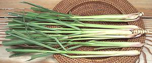

SAFARI
Users
Lamiales - Order
Mint Family
- LamiaceaeOlive Family
- OleaceaePlantain Family
- PlantaginaceaeThere are endless hybrids and cultivars of the highly aromatic Mints. Many have only local distribution, but suitable equivalents can be found from those widely available. For worldwide culinary usage of these plants see our page Lamiales (Order).
Spearmint[Spear Mint; Rau Hung (Viet); Mentha spicata alt Mentha cordifolia]
This mint, the most widely available in North America, originated in
Europe or Southwest Asia, but is now grown worldwide. It works fine in
Southeast Asian recipes that call for "Mint Leaves" without other
qualifiers.
Vietnamese Mint / Scotch Spearmint
[Rau Hung Cay (Viet); Gingermint; Scotchmint (UK);Mentha x gracilis] This mint is a naturally occurring sterile hybrid of Spearmint and Field Mint (M. arvensis). It is used in Vietnam for herb plates and in Pho. The leaves are thinner and more delicate than Spearmint, and it has a bit of Peppermint bite. The leaves are typically up to 2-3/4 inches long. The world center for growing this mint is the U.S. Pacific
Northwest, Wisconsin and Idaho, with smaller production in Alberta
and Saskatchewan, Canada. The North American production is used almost
entirely for processing into mint flavors for chewing gum, candies,
and as a rat repellant. The photo specimens were purchased from a
large Chinese / Vietnamese market in Los Angeles (San Gabriel) for
2016 US $1.09 for 2-1/2 ounces.
Thai BasilsThese basils have become quite important in some parts of North America, particularly Southern California, where there are large Thai and Vietnamese communities, as well as a general enthusiasm for Thai cuisine.
Tia-to [Perilla frutescens]
[Perilla frutescens]
The Vietnamese variety of perilla is considerably smaller than the Korean or Japanese, and more aromatic. It is used in soups and stews, and particularly with rice vermicelli dishes called bún. In Laos they are used in a similar dish called kao phoon. These leaves are often available in some of the large Asian markets
here in Los Angeles.
Details and Cooking
Vietnamese Balm [Vietnamese Lemon Mint, Cockscomb Mint; Rau Kinh Gioi, Lá
Kinh Gioi; Elsholtzia ciliata]
[Vietnamese Lemon Mint, Cockscomb Mint; Rau Kinh Gioi, Lá
Kinh Gioi; Elsholtzia ciliata]
Pronounced "Kin Zoy", the leaves of this plant are thin and delicate
with the taste of a lemony combination of mint and Thai basil. The
plant bears flat spikes of light lavender colored flowers. Leaves are
generally eaten raw, included on an herb plate that may accompany
cooked foods such as grilled meats. The raw leaves may also be stirred
into soups, such a Pho, included in egg rolls, meat balls and the
like. Here in Southern California these leaves are often available in
the big Asian markets along Valley Blvd in Los Angeles (Alhambra,
San Gabriel), and in Little Saigon down in Orange County.
Ngo Om [family Plantaginaceae: Ngo Om, Ba Om, Rau Om (Viet);
Phak Kayang (Thailand); Tian Xiang Cao, Zi Su Cao (China); Soyop-pul
(Korea); Shiso-kusa (Japan); Limnophila aromatica]
[family Plantaginaceae: Ngo Om, Ba Om, Rau Om (Viet);
Phak Kayang (Thailand); Tian Xiang Cao, Zi Su Cao (China); Soyop-pul
(Korea); Shiso-kusa (Japan); Limnophila aromatica]
This aquatic herb, a member of the Plantain family, is native throughout
Southeast Asia, extending into southern China, Japan and Australia. After
the Vietnam war, it was brought to North America by refugees, and is now
easily available in the Asian markets here in Southern California. This
plant grows well in still water, such as found in rice paddies. It's
particularly popular in Vietnam, but is also used in China and Japan.
In Chinese, Japanese and Korean, the name of this herb is the same as for
Perilla, a very distantly related herb. It
is made specific with a suffix meaning green leafy plant (see names
above).
Details and Cooking.
Jasmine[family Oleaceae: Arabian Jasmine; Mo Li Hua (China); Full (Arabic); Ful (Turkish); Malila (Thai); Hoa Nhài (Viet); Jasminum sambac | Cay Vang, Che Vang (Viet); Jasminum subtriplinerve]Native to South and Southeast Asia, J. sambac is the variety used in China to make jasmine tea. The white flowers are dried and mixed with green or black tea. The flowers, which have a very strong perfume, open at night and close in the morning. The leaves of J. subtriplinerve (photo), are used to make
a medicinal tea in Vietnam, said to be anti-bacterial and to
stimulate mammary glands to increase lactation.
Photo by Hungda distributed under license Creative
Commons
Attribution-ShareAlike 3.0 Unported.
|


Carnations
The almost unbelievably diverse order Caryophyllales includes several herbs used in Southeast Asia, but most aren't particularly well known in North America. For culinary usage of Carnations world wide, see our Carnations page.
Rau Dang Bien[Bitter Leaf, Bitter Herb, Bitter Cumin; Rau Dang (Viet); Jima, Jharasi, Peru-n-tiray (India); Glinus oppositifolius of family Molluginaceae] There is confusion due to more than one Rau Dang (Bitter Leaf), but all the Vietnamese sources I've found with photos of culinary usage show this one, and it's the one available in Asian markets here in Los Angeles. It is a tropical and subtropical plant that grows in very wet areas of Africa, South and Southeast Asia and Australia. With rather mild bitterness, it is an important flavoring for some Vietnamese soups. It is also eaten as a vegetable in parts of India and Southeast Asia. This plant is now grown in Southern California (approval was probably
delayed by the State's intense suspicion of fast growing water plants
that clog irrigation channels). The name "Bitter Cumin" comes from the
cumin shaped seeds. A related species, Glinus lotoides, with
similar distribution, is similarly used.
Rau Dang[Bitter Leaf, Bitter Herb, Prostrate Knotweed, Birdweed, Pigweed; Rau Dang (Viet (Bitter Leaf)); Polygonum aviculare of family Polygonaceae]
This plant may or may not have culinary usage in Vietnam (see Rau Dang
above), but that it is called Rau Dang (Bitter Leaf) is confirmed by the
Viet version of Wikipedia. In any case, it is sour in taste from oxalic
acid, and it does have medicinal uses. This plant is a common weed in
California and many other places worldwide.
Rau Ram[Vietnamese Coriander, Vietnamese mint (not unique), Vietnamese cilantro, Cambodian mint, Hot mint; Daun kesum, Daun kesom, Daun Laksa (Malay); Phak phai (Thai); Luam laws (Hmong); Phak phaew (Laos); Chi krasang tomhom, Chi pong tea koun (Cambodia); Phak-pai (NE India); Persicaria odorata syn Polygonum odoratum of family Polygonaceae]
This rangy herb is used throughout Southeast Asia, raw in salads and
summer rolls, as a garnish and cooked, particularly in soups, but also
in some stews. It has a slightly resinous taste and is particularly
associated with Vietnamese cuisine. It is considered a suppressant of
sexual urges so is often grown by Buddhist monks to make celibacy more
tolerable. This herb is easily recognized from the spearhead shaped
leaves with two purplish splotches.
Details and Cooking.
Sorrel / Dock[Spinach dock; Shchavel (Russia, Ukraine); Rugstyne (Lithuania); Macris, Stevie (Rumania); Szczaw (Poland); Azeda (Portugal); Kuzu Kulagi (Turkish); Rau Chua (Viet-American); Ambada Bhaji, Gongoora (India), Rumex acetosa]
Sorrel grows wild over much of Europe and is a common crop there, but
is little known in Vietnam, where there is no Vietnamese name for it.
It has, however, been added to the raw herb plate by Viet-Americans
under the names Rau chua (sour herb) or Rau thom (fresh herb). As
with spinach, sorrel's tartness is provided by oxalic acid.
Details and Cooking.
Photo by Burschik distributed under license
Creative Commons
Attribution ShareAlike v3.0.
|
Kaffir Lime
 [Makrut (Thai), Krauch Soeuch (Cambodia), Limau Purut (Malay),
Citrus hystrix]
[Makrut (Thai), Krauch Soeuch (Cambodia), Limau Purut (Malay),
Citrus hystrix]
Not really a lime, this citrus fruit is native to Southeast Asia and used particularly in Thai Cuisine. The odd double leaves are most used, often in soups, but also in salads and stir fries. The rind of the fruit is used in Thai curry pastes. Many references say the juice is inedible but I do not find that the case, though there isn't a lot of juice in a kaffir lime.
For soups, the leaves are used whole, but for salads and the like
they are rolled up tightly, then cut into threads from both sides of
the main rib. The threads may then be chopped, and can be pounded in
a mortar if they need to be softened, as they do not soften in
cooking. The substitute is lime zest, just the green, no white.
The shrub makes a very nice and useful decorative which can be
grown in a container, so many nurseries stock them. When fully ripe,
the fruit turns just a touch yellowish and falls from the tree but
it is generally used before that stage. The trees need to be pruned
to keep them leafy.
Details and Cooking
Lemon Grass
 [Fever Grass; Ta Khrai, Takrai (Thai); Xa, Sa chanh (Viet); Tanglad (Philippines); Zabalin (Burma); Si khai, Sing khai (Laos); Bai mak nao, Slek krey sabou, Kuel skey (Cambodia); Sera (Sri Lanka, India); Ghanda, Bhustrina (India); Serai (Malaysia); Sereh (Indonesia); Citronella (French); Cymbopogon citratus]
This lemon scented grass, C. citratus, is native to Southeast Asia, and essential to the cuisines of the entire region, including the Philippines. It is also used in Sri Lanka, parts of southern China, and in the Caribbean, but is not used in cooking in India.
It may be lightly crushed and used in lengths for flavoring, then
removed, or it may be used well curshed, chopped very fine and pounded
in a mortar for use in salads and the like. It does not soften with
cooking.
Details and Cooking.
Parsleys & Aralias
This family includes many of the most important culinary herbs worldwide - and some highly toxic herbs as well. For culinary usage of Parsley's worldwide, see our Parsley, Aralias and Pitosporums page.
Chinese / Cutting Celery [Kinchay (Philippines); Khan Choy (China); Keun Chai (Thai); Cutting
Celery, Soup Celery Celeri à Couper (French); Celero (Italy);
Selinon (Latin); A. graveolens var. secalinum]
[Kinchay (Philippines); Khan Choy (China); Keun Chai (Thai); Cutting
Celery, Soup Celery Celeri à Couper (French); Celero (Italy);
Selinon (Latin); A. graveolens var. secalinum]
Probably much like celery grown in Europe before 1600, this plant has
relatively thin stems, is stronger in flavor and is more fibrous than
Pascal celery. It is now grown in California and available in the many
Asian markets here. If your recipe calls for it and you can't get it,
buy the leafiest head of regular celery you can find, and use the part
above the first joint where the flavor is stronger. The specimens
were 30 inches long with stems about 1/2 inch wide 5 inches above
the leaf base. Both stems and leaves are used in recipes from China
and Southeast Asia.
Details and Cooking.
Cilantro [Coriander Leaf; Won Soy, Wonsoy (Philippines); Ngo, Mui (Viet);
Coriandolo (Italy); Xiang cai, Heung choy (China); Coriandrum sativum]
[Coriander Leaf; Won Soy, Wonsoy (Philippines); Ngo, Mui (Viet);
Coriandolo (Italy); Xiang cai, Heung choy (China); Coriandrum sativum]
Although originating in Southwest Asia and southern Europe, probably brought to Southeast Asia by the Portuguese, this is now the most important herb in most of Southeast Asia. In North America, Cilantro is now available in just about every supermarket and ethnic market. Some that I shop at must sell more than a cubic yard of it on a typical Saturday. There is a strong "I hate Cilantro" movement on the Internet, but the condition has proved curable by exposure. The roots are also edible, used mainly in the cuisine of Thailand,
and to a lesser extent in some of its neighbors. They are used as a
component of curry pastes and in some soups, but are still hard to
get even here in Southern California.
Details and Cooking.
Culantro[Long coriander, Sawtooth Herb, Mexican coriander, Donnia; Ngo gai, Mui ta, Ngo tau (Viet); Eryngium foetidum]
This herb is native to Mexico, Central and South America, but is now
very important as a culinary herb in Southeast Asia. It is sometimes
described as tasting like Cilantro, but stronger. I find the
resemblance detectable, but not close. Unlike Cilantro, it takes well
to drying, holding both color and flavor.
Details and Cooking.
Dill [Thi la (Vietnam); Anethum graveolens]
[Thi la (Vietnam); Anethum graveolens]
Dill is a popular herb in Vietnam, probably adopted from the French.
It is used to a much lesser extent in the rest of Southeast Asia.
In Vietnam it is not used raw, but added to dishes near the end
of cooking. However, a pile of dill fronds is my favorite herb to
use with Vietnamese Ban Mi sandwiches.
Details and Cooking.
Parsley[Petroselinum crispum]
While not nearly as important as Cilantro in Southeast Asia, Parsley
is used. Of the wo forms available, flat leaf (Italian) and curly
leaf, Flat Leaf is the one used.
Details and Cooking.
Water Dropwort [Java Water Dropwort, Water Celery, Vietnamese Celery;
Minari (Korea); Rau Can, Can Nuoc (Viet); Seri (Japan); Komprek
(Manipur, India); Oenanthe javanica]
[Java Water Dropwort, Water Celery, Vietnamese Celery;
Minari (Korea); Rau Can, Can Nuoc (Viet); Seri (Japan); Komprek
(Manipur, India); Oenanthe javanica]
Most Water Dropworts (Genus Oenanthe) are toxic to extremely
toxic, but this one, native to East Asia, is edible. Its thin hollow
stems are topped with celery-like leaves. This herb is more used in
China, Korea and Japan than in Southeast Asia.
Details and Cooking.
Pennywort [Gotu kola (Sri Lanka); Dollarwort (U.S.); Rau-ma (Viet);
Myin-kwa-ywet (Burma); Pegaga (Malay); Buabok (Thai); Pegagan
(Indonesia); Takip-kohol (Philippine); Centella asiatica
(small variety); Hydrocotyle javanica (larger variety)
and others]
[Gotu kola (Sri Lanka); Dollarwort (U.S.); Rau-ma (Viet);
Myin-kwa-ywet (Burma); Pegaga (Malay); Buabok (Thai); Pegagan
(Indonesia); Takip-kohol (Philippine); Centella asiatica
(small variety); Hydrocotyle javanica (larger variety)
and others]
Pennyworts grow worldwide in wet and moist tropical and temperate areas
but the varieties of most culinary interest are native to Southeast
Asia, Sri Lanka and Australia. Botanists variously place them in
family Apiaceae with carrots and parsley or in family
Araliaceae with ginseng or in family Mackinlayaceae
with a few Australian plants of little note. The largest photo
specimen (H. javanica) is 3-1/2 inches across the leaf.
Details and Cooking
|
Pepper Family
The Pepper family (Piperaceae) provides various pepper spices, but also a number of leafy herbs important in Southeast Asia. For this family worldwide see our Order Piperales page.
Thai Long Pepper[Chui Jhal (Bangladesh); Dee Plee (Thai); Piper chaba]
This pepper, native to South and Southeast Asia, is used throughout
the region. In Bangladesh, the stems and roots are peeled, chopped and
used as a flavoring for meat dishes, particularly mutton, and tastes
somewhat like horseradish. In Thailand the fruits, which are orange-red
when ripe and black when dried, are used both fresh and dried,
pounded to paste or pounder and added to various curry pastes, and
added to fish to cut the fishy flavor. Various parts of the plant are
used medicinally throughout the region.
Photo by BotBin distributed under license Creative
Commons
Attribution-ShareAlike 3.0 Unported.
Wild Betel [Cha phlu (Thai); Kahe (N. Thai); Lá Lôt (Viet); pokok
kadok (Malay); Phak i leut, Ak eelerd (Lao); Piper sarmentosum]
[Cha phlu (Thai); Kahe (N. Thai); Lá Lôt (Viet); pokok
kadok (Malay); Phak i leut, Ak eelerd (Lao); Piper sarmentosum]
This pepper plant, native to Southeast Asia is very similar to
Lalot, and the same names are often applied in
Thai and Vietnamese. The leaves have a light, pleasant bitterness that
compliments other foods. Leaves are used as wrappers for a popular Thai
snack called Miang kham, which may be served on open leaves, a
do-it-yourself kit with leaves and each ingredient separate, or as
pre-wrapped snacks. In northern Thailand it is the main ingredient in
Kaeng khae curry. In Laos and Malaysia leaves are shredded and
included in salads.
Photo by
Forest and Kim Starr
distributed under license Creative Commons
Attribution-ShareAlike 3.0 Unported, attribution required,
notification appreciated.
Lalot [Pepper Leaf; Lá Lôt, La Lop (Viet); Japloo, Jeeploo
(Khmer); Chaphloo (Thai); Phak ee lert, Phak nang lert (Lao);
Piper lalot]
[Pepper Leaf; Lá Lôt, La Lop (Viet); Japloo, Jeeploo
(Khmer); Chaphloo (Thai); Phak ee lert, Phak nang lert (Lao);
Piper lalot]
The practice of wrapping meat in leaves (dolma) traveled from Persia through India to Southeast Asia. They don't have grape leaves in Southeast Asia, so the Vietnamese took to using lalot leaves instead, wrapped around a beef sausage filling and called Thit bò là lôt. This leaf is also used extensively as a medicinal. Lalot is often confused with the closely related
"Wild Betel" (Piper samentosum), which
has similar culinary uses. Both are slightly bitter and neither is
nearly as strongly aromatic as the related Betel Leaf. The photo
specimens, purchased from an Asian market in Los Angeles, were up
to 4 x 5-1/4 inches and sold in 4 ounce bundles at 2012 US $14.99 /
pound.
Betel Leaf[Paan; Piper betle]
Cultivated all through India and Southeast Asia, this leaf is best
known as the wrapper for a slightly narcotic chew called Paan. It is
not the highly aromatic (and fairly bitter) leaf that has the narcotic
effect and negative health impact (oral cancer, etc.), but the areca
palm nut and tobacco around which it is wrapped. The photo specimens,
purchased from an Asian market in Los Angeles, were 6-1/4 x 8 inches,
2012 US $23.99 / pound.
Fish Mint[Dap ca, Diep ca, Vap ca, Rap ca (Viet); Zhe'ergen, Yuxingcao (China); Ja mardoh (Meghalaya India); Toningkok (Manipur India); Masunduri (Assam India); Dokudami (Japan); Lizard tail, Chameleon plant, Heartleaf, Fishwort, Bishop's weed; Houttuynia cordata of family Saururaceae (lizard tails)] This is the only significant edible plant in order Piperales that is not in the Piper genus. Fish Mint leaves are used particularly in Vietnam, the far northeast of India, and in south central China, often raw as a garnish or salad ingredient, but sometimes cooked with other vegetables. In northeast India it is used raw, but also cooked in fish curry. In south central China (Yunnan, Guizhou, Sichuan, western Guangxi) the long narrow rhizomes are eaten, usually raw in salads and the like. They are said to have a fresh peppery flavor. Fish mint gets its name from having an unusual flavor which some people consider "fishy". This herb tends to wilt badly, but can be refreshed by complete immersion in cool water. The photo specimens, from a large Asian market in Los Angeles, had leaves up to 2 inches long and nearly 2 inches wide. Variegated varieties are cultivated as decoratives under the name
"Chameleon Plant". The plant is used medicinally, particularly in
China. It can become a difficult to eradicate invasive, and
is considered as such in parts of the United States and Australia.
|